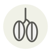

Datte Deglet Nour
Deglet Nour date
| Nom latin | Phoenix dactylifera |
|---|---|
| Famille | Fruits |
| Origine | Oasis de Tolga, Algérie |
| Saison | Toute l’année |
| Goût | Miellé · Sucré · Délicat · Noisette |
| Prix courant | 6–12 €/kg |
Ce que c’est
Le nom signifie à peu près « datte de lumière » : tenez-en une devant une lampe et la chair ambrée devient translucide autour du noyau. Elle vient des oasis de Tolga, dans le Biskra algérien, et de là gagna le Djérid tunisien ; on la vend encore en France en branches, chaque décembre.
En cuisine
À environ 20 % d’eau contre 30 % pour la Medjool, elle se tranche sans coller et tient sa forme après une heure de tajine. Ne la substituez pas dans une pâte de dattes : elle reste granuleuse, quel que soit le temps de mixage.
S’accorde avec
Agneau Amande Cannelle Orange Semoule Safran Pois chiches
Même espèce
Datte Pâte de dattes Sirop de dattes (silan) Datte Medjool Jaggery de palmier dattier
Une erreur ici, ou un oubli ? Dites-le nous